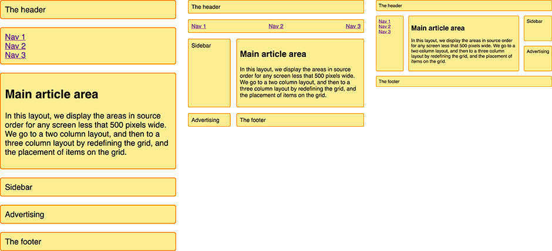

<link rel="import" href="../../../bower_components/polymer/polymer.html">

<link rel="import" href="../../../bower_components/iron-icons/iron-icons.html">
<link rel="import" href="../../../bower_components/paper-button/paper-button.html">
<link rel="import" href="../../../bower_components/codelab-components/google-codelab-elements.html">

<dom-module id="css-grid-component">
  <template>
    <google-codelab title="Css Grid" feedback-link="" environment="web" last-updated="2018-03-31">
      <google-codelab-step label="Introduction" duration="1">
        <h2>
          <strong>CSS Grid Layout </strong>
        </h2>

        <p>
          For our next exercise we start with creating a small and basic responsive layout using CSS Grid and Media Queries.
        </p>

        <h2>
          <strong>What You'll Learn</strong>
        </h2>

        <ul class="checklist">
          <li>How to create responsive layout using Css Grid.</li>
          <li>Implement Grid template areas.</li>
          <li>How to use media querys.</li>
        </ul>

        <h2>
          <strong>What you'll need</strong>
        </h2>

        <ul>
          <li>Chrome 52 or above</li>
          <li>Your favorite text editor</li>
          <li>Basic knowledge of HTML, CSS</li>
        </ul>
      </google-codelab-step>
      <google-codelab-step label="Getting set up" duration="5">
        <h2>
          <strong>Project Set Up</strong>
        </h2>

        <p>
          Fire up a code editor, and create three files
          <code>index.html</code>,
          <code>style.css</code>,
          <code>package.json</code>.
        </p>

        <h3>index.html</h3>

        <pre>
<code>
&lt;!DOCTYPE html&gt;
&lt;html lang="en"&gt;
&lt;head&gt;
    &lt;meta charset="UTF-8"&gt;
    &lt;meta name="viewport" content="width=device-width, initial-scale=1.0"&gt;
    &lt;meta http-equiv="X-UA-Compatible" content="ie=edge"&gt;
    &lt;link rel="stylesheet" href="style.css" /&gt;
    &lt;title&gt;Css Grid&lt;/title&gt;
&lt;/head&gt;
&lt;body&gt;
  &lt;h3&gt; Css Grid &lt;/h3&gt;
&lt;/body&gt;
&lt;/html&gt;
</code></pre>
        <h3>style.css</h3>
        <pre>
<code>
  * { box-sizing: border-box; }

  .grid-container {
      max-width: 1024px;
      margin: 0 auto;
      font: 1.2em Helvetica, arial, sans-serif;
  }

  .grid-container > * {
      border: 2px solid #f08c00;
      background-color: #ffec99;
      border-radius: 5px;
      padding: 10px;
  }
  
  nav ul {
      list-style: none;
      margin: 0;
      padding: 0;
  }
  
  nav ul {
      flex-direction: column;
  }
</code></pre>

        <h3>package.json</h3>

        <pre>
<code>
    {
      "name": "css-grid",
      "version": "1.0.0",
      "description": "",
      "main": "index.js",
      "scripts": {
        "test": "echo \"Error: no test specified\" && exit 1",
        "start": "live-server"
      },
      "author": "",
      "license": "ISC",
      "devDependencies": {
        "live-server": "^1.2.0"
      }
    }
</code></pre>
        <p>
          Install the needed dependencies as follows:
          <ul>
            <li>Run
              <code>npm install</code> to install the node dependencies.</li>
             <li> <code>npm start</code> to run live-server. </li>
          </ul>
        </p>
      </google-codelab-step>
      <google-codelab-step label="Creating HTML Template" duration="5">
        <h2>
            <strong>Adding HTML Content</strong>
        </h2>
        <p>I am going to create this layout using the named template areas that we learned about in the guide <b>Grid template areas.</b></p>

        <p>The mark-up is a container with elements inside for a header, footer, main content, navigation, sidebar, and a block into which I am intending to place advertising.</p>
        <code>index.html</code>:
          <pre>
<code>
&lt;div class="grid-container"&gt;
    &lt;header class="main-head"&gt; The header&lt;/header&gt;
    &lt;nav class="main-nav"&gt;
      &lt;ul&gt;
          &lt;li&gt;&lt;a href=""&gt;Nav 1&lt;/a&gt;&lt;/li&gt;
          &lt;li&gt;&lt;a href=""&gt;Nav 2&lt;/a&gt;&lt;/li&gt;
          &lt;li&gt;&lt;a href=""&gt;Nav 3&lt;/a&gt;&lt;/li&gt;
      &lt;/ul&gt;
    &lt;/nav&gt;
  &lt;article class="content"&gt;
        &lt;h1&gt;Main article area&lt;/h1&gt;
        &lt;p&gt;In this layout, we display the areas in source order for any screen less that 500 pixels wide. We go to a two column layout, and then to a three column layout by redefining the grid, and the placement of items on the grid.&lt;/p&gt;
  &lt;/article&gt;
        &lt;aside class="side"&gt;Sidebar&lt;/aside&gt;
        &lt;div class="ad"&gt;Advertising&lt;/div&gt;
        &lt;footer class="main-footer">The footer&lt;/footer&gt;
&lt;/div&gt;
</code></pre> 
      </google-codelab-step>
      <google-codelab-step label="Define Grid Areas" duration="5">
          <h2>
            <strong> Grid Areas </strong>
          </h2>
          <p>
              As we are using grid-template-areas to create the layout. Outside of any media queries I need to name the areas. We name areas using the grid-area property.
          </p>
      <pre>
<code>
.main-head {
    grid-area: header;
  }
        
.content {
    grid-area: content;
  }
        
.main-nav {
  grid-area: nav;
}
        
.side {
  grid-area: sidebar;
  }
        
.ad {
  grid-area: ad;
}
      
.main-footer {
  grid-area: footer;
}
  </code>
  </pre>
      

      </google-codelab-step>
      <google-codelab-step label="Mobile First" duration="5">
        <h2>
         <strong>Design first for Mobile</strong> 
        </h2>

        <p>
            This will not create any layout, however our items now have names we can use to do so. Staying outside of any media queries I am now going to set up the layout for the mobile width. 
            I have not defined any column or row tracks but this layout dictates a single column, and rows will be created as needed for each of the items in the implicit grid.
        </p>
        <pre>
<code>
.grid-container {
  display: grid;
  grid-gap: 20px;
  grid-template-areas: 
    "header"
    "nav"
    "content"
    "sidebar"
    "ad"
    "footer";
}
</code></pre>

      </google-codelab-step>
      <google-codelab-step label="Add Media Queries" duration="10">


        <h2>
          <strong>Add Media Queries</strong>
        </h2>

        <p>
            After setting up a mobile layout we will get this single column at all screen sizes, we can now add a media query and redefine our layout for the circumstance of having enough screen real estate to show two columns.
        </p>
          <pre>
<code>
@media (min-width: 500px) {
  .grid-container {
    grid-template-columns: 1fr 3fr;
    grid-template-areas: 
      "header  header"
      "nav     nav"
      "sidebar content"
      "ad      footer";
  }
  nav ul {
    display: flex;
    justify-content: space-between;
  }
}
</code>
            </pre>

          <p>
              You can see the layout taking shape in the value of grid-template-areas. The header spans over two column tracks, as does the nav. In the third row track we have the sidebar alongside the content. In the fourth row track I have chosen to place my ad content – so it appears under the sidebar, then the footer next to it under the content. I’m using a flexbox on the navigation to display it in a row spaced out.
          </p>
            <p>I can now add a final breakpoint to move to a three-column layout.</p>
          <pre>
<code>
@media (min-width: 700px) {
.grid-container {
  grid-template-columns: 1fr 4fr 1fr;
  grid-template-areas: 
    "header header  header"
    "nav    content sidebar"
    "nav    content ad"
    "footer footer  footer"
  }
  nav ul {
    flex-direction: column;
  }
}
</code>
          </pre>
      </google-codelab-step>
      <google-codelab-step label="Done" duration="5">
          <h2>
              <strong>Well Done</strong>
            </h2>
          <p>Well done you have create a simple and responsive layout using CSS Grid and Media Queries.</p>
            
          
      </google-codelab-step>
    </google-codelab>
  </template>
  <script>
    Polymer({
      is: 'css-grid-component',

      _twoWayBinding: function (value) {
        return '{{' + value + '}}';
      },

      _oneWayBinding: function (value) {
        return '[[' + value + ']]';
      }
    });
  </script>
</dom-module>